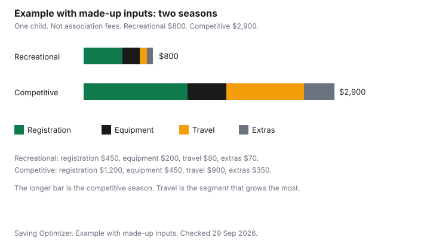

Kids · Canada
The Real Cost of Minor Hockey in Canada, and Where Families Save
Minor hockey does not have one Canadian price. A house-league season and a competitive season are different stacks of registration, equipment, ice, travel, and fundraising, and the association sets the first number. This guide is a way to write the season down before you register, with official places to ask about fee help, and with Health Canada's rules for a used helmet. The two totals in the example are made-up inputs so the lines are visible. They are not a survey of associations, and this page does not rank programs or equipment.
Key takeaways
- Put registration, extra ice, equipment, sticks, sharpening, team fees, travel, and fundraising on separate lines. This guide does not quote a national average.
- Health Canada says not to buy an ice hockey helmet after a major impact, if it is more than five years old, if it is damaged, or if parts are missing. Look for the CSA sticker.
- Jumpstart and KidSport are the national doors to fee help. Amounts and income tests are on their sites. Check your municipality as well.
- Do not assume a federal children's fitness credit is on your return. Nova Scotia, Manitoba, and Quebec publish their own activity credits. Confirm with the CRA and the province.
- The chart is an example with made-up inputs. Your association's fee sheet is the real comparison.
Registration, ice time and levels
Start with the association's registration form, not with a number you heard at the rink. House league, select, and representative or AAA-style programs are different products.
Ice that is included, ice that is extra, and a team fee that arrives in October are different lines. Hockey Canada's site is the national body. The page as of 29 September 2026 does not publish a national registration fee for minor hockey. Your fee is the one the association prints for the level and the birth year.
Write the level down before you price equipment. A child who will play one recreational season does not need the same stick budget as a child in a travel program. Ask what the registration fee includes: ice, a jersey, insurance through the association, or none of those. Then ask what it excludes. The excluded list is where seasons surprise people. A sinking fund is the right home for a bill that arrives once, in September, and then again as tournaments. The zero-based month is where you assign the registration withdrawal so it does not collide with a property-tax instalment.
Equipment: what to buy new, what to buy used
Skates that fit, a stick at the right length, and gloves that are complete can be bought used if you can see the condition. A helmet is the line Health Canada treats differently.
The second-hand shopper sheet, page details 4 February 2021, says ice hockey helmets and face protectors sold in Canada must carry a CSA sticker and show the standard number. A face protector sold on its own needs the mark, the hardware, and the instructions. The helmet needs a date of manufacture and a working chin strap. The sheet says helmets usually last between three and five years depending on use. Do not buy one that took a major impact, is more than five years old, shows damage, or is missing parts. Damage is not always visible. If you are unsure, do not buy it. After an impact, follow the manufacturer's replacement guidance, and follow Hockey Canada's equipment rules for the level.
The rest of the bag can be a mix. Used skates still have to fit the foot that will wear them this season. A stick that is cracked is not a saving. The winter gear guide is the snowsuit and the boots, which are not the hockey bag. The used household guide is the general habit. The full safety table for helmets, car seats, and cribs is the secondhand gear guide. A retailer offer or a used-gear offer, if you use one, applies to the price. It does not retire a helmet that failed the impact check.
Tournaments, travel and fundraising
Ask for the tournament calendar before you register, and price one away weekend as a bundle: entry fee if it is not in the team fee, gas or a shared ride, a hotel if the sheet says overnight, and meals you will actually buy. Fundraising is a cost when the family is expected to sell a quota or write a cheque instead. Put that cheque on the worksheet as its own line so it is not a surprise in November.
Competitive hockey often costs more because those lines exist, not because the registration form uses a larger font. If the calendar is empty at registration, write "unknown" and a ceiling you will not cross, and revisit it when the team publishes dates. Do not fill the unknown with a national average. This guide does not quote one.
Fee assistance and grants
Two charitable doors are public. Canadian Tire Jumpstart lists individual child grants and community development grants.
The home page as of 29 September 2026 does not state an income cutoff or a grant amount. Use the individual child grants page and read the current eligibility before you count on the money. KidSport Canada's page says to apply through a local chapter and lists provinces and territories. It does not, on that home page, state a national dollar amount. Apply to the chapter where you live, on that chapter's rules.
Municipal recreation subsidies are a third door, and they are local. Ask the city's recreation department whether hockey registration qualifies and whether the grant has to be approved before you pay. A grant that arrives after you have paid the full fee is a refund question, not a discount you already received. Check the program. This page does not quote a municipal amount.
| Program | What the page says | What to do |
|---|---|---|
| Canadian Tire Jumpstart | Individual child grants and community grants are listed. No grant amount or income cutoff is stated on the home page as of 29 September 2026. | Open the individual child grants page and check eligibility before you register. |
| KidSport | Apply through a local chapter. The national home page lists chapters and does not state a national grant amount. | Start at KidSport Canada and follow the chapter for your province or territory. |
| Municipal fee assistance | City and town programs differ. This guide does not quote one. | Ask your recreation department whether minor hockey qualifies, and whether approval must come before you pay. |
Resale and swaps at season end
Skates and sticks that still have a season in them can go to a swap, a teammate, or a consignment shop. A helmet that took a major impact, or that is past the five-year note on the Health Canada sheet, should not be passed on as usable.
Follow the manufacturer's replacement guidance. Label the bag you are selling with the size you measured, not the size on a faded sticker, so the next family can see the fit. The money that comes back is next year's equipment line, if you park it. Otherwise it disappears into groceries. Park it.
A season budget worksheet
Fill the first table with the association's numbers. The second table is an example with made-up inputs so a recreational stack and a competitive stack can be compared on purpose. Change every figure.
| Line | Your number |
|---|---|
| Registration | |
| Ice, or extra ice outside registration | |
| Equipment, except sticks | |
| Sticks | |
| Skate sharpening | |
| Jerseys and team fees | |
| Travel and tournaments | |
| Fundraising commitments | |
| Season total |
| Line | Recreational, made-up | Competitive, made-up |
|---|---|---|
| Registration | $450 | $1,200 |
| Equipment, including sticks and sharpening | $200 | $450 |
| Travel and tournaments | $80 | $900 |
| Extras: team fees and fundraising | $70 | $350 |
| Season total | $800 | $2,900 |

The tax question sits beside the worksheet, not inside it. Do not assume a federal children's fitness credit is still a line on the return. Check the CRA. Nova Scotia's 2025 package says the maximum children's sports and arts amount is $500 per child for fees paid in 2025, for a qualifying child under 19 on 31 December 2025. Eligible fees can include certain equipment and certain uniforms, and they exclude accommodation, food, travel, and beverages. Manitoba's non-refundable credits table lists, for both 2024 and 2025, a fitness tax credit of $500 for children and young adults up to age 24, or $1,000 with a disability, and a children's arts credit on the same $500 and $1,000 pattern. Quebec's children's activities credit page, for a resident on 31 December 2025, requires a program of at least eight consecutive weeks, or five consecutive days, and family income that does not exceed $168,470. The page points the credit amount to line 462 of the Quebec guide. This guide does not quote a Quebec credit percentage. Yukon's children's arts amount is up to $500 per child for 2025 on the CRA's Yukon package. The fitness credit is a separate Yukon line. Check Form YT479 for that amount. The wider activity budget is the activities guide. This is not tax advice.
Sources
- Hockey Canada home page, as of 29 Sep 2026. No national minor-hockey registration fee is quoted from it.
- Health Canada, information for shoppers of second-hand products, page details 4 February 2021, as of 29 Sep 2026. CSA sticker, date of manufacture, chin strap, three to five years, no major impact, no missing parts.
- Canadian Tire Jumpstart home page, as of 29 Sep 2026. Individual child grants are listed. No grant amount or income cutoff quoted from the home page.
- KidSport Canada home page, as of 29 Sep 2026. Apply through a local chapter. No national grant amount quoted.
- Revenu Québec, tax credit for children's activities, as of 29 Sep 2026. Resident on 31 December 2025. Eight consecutive weeks or five consecutive days. Family income not exceeding $168,470. Credit amount is in the line 462 instructions. Percentage not quoted here.
- Manitoba Finance, personal tax credits, as of 29 Sep 2026. Fitness tax credit $500, or $1,000 with a disability, for 2024 and 2025, children and young adults up to age 24. Children's arts credit on the same pattern.
- CRA, Nova Scotia 2025 package, 5003-PC, as of 29 Sep 2026. Children's sports and arts tax credit, maximum $500 per child for 2025. Qualifying child under 19 on 31 December 2025.
- CRA, Yukon 2025 package, 5011-PC, as of 29 Sep 2026. Children's arts amount up to $500 per child for 2025. Fitness credit referenced on Form YT479. Fitness dollar amount not quoted from 5011-PC.
- Season totals of $800 and $2,900 are an example with made-up inputs.
Frequently asked questions
How much does minor hockey cost in Canada?
This guide does not quote a national average, because registration, ice, equipment, and travel are set by the association and the level. Use the season worksheet and put your own numbers in. The chart is an example with made-up inputs, a recreational total of $800 and a competitive total of $2,900. It is not a survey of associations.
What hockey equipment is safe to buy used?
Skates, sticks, and some protective gear can be bought used if they fit and are complete. Health Canada says not to buy an ice hockey helmet that took a major impact, is more than five years old, shows damage, or is missing parts, and to look for the CSA sticker. Follow the manufacturer's replacement guidance after an impact, and Hockey Canada's equipment rules for the level your child plays.
Is there financial help for hockey fees?
Canadian Tire Jumpstart and KidSport publish grant programs. Jumpstart's individual child grants and KidSport's provincial chapters are where you apply. This page does not quote a grant amount or an income cutoff. Check the program before you count on it, and ask your municipality about a recreation subsidy.
Why does competitive hockey cost so much more?
The worksheet splits a season into registration, equipment, travel, and extras. Competitive streams often add tournaments, extra ice, and travel that a house league does not. The two bars on the chart are an example with made-up inputs, $800 and $2,900. Your association's fee sheet is the real comparison.
Can I claim hockey fees on my taxes?
Do not assume a federal children's fitness credit is on your return; check the CRA. Nova Scotia's 2025 package allows up to $500 per child for a children's sports and arts tax credit, and Manitoba lists a fitness tax credit of $500, or $1,000 with a disability. Quebec's children's activities credit has conditions, including a family-income ceiling of $168,470 on the page for 2025. This is not tax advice.
Researched and drafted with AI assistance and fact-checked against official Canadian sources. How we create content.
Disclosure: Used sports gear and sports retailer offers are offer types. Saving Optimizer may earn a commission if a partner link is added later. No partnership is claimed. An offer does not change a helmet's impact history or a grant's eligibility. Education only.